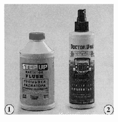
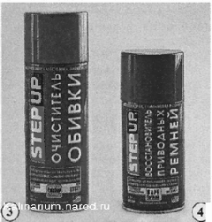
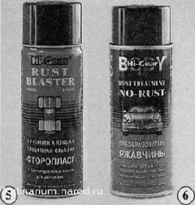
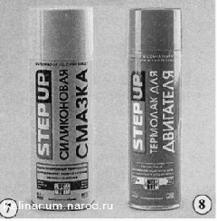
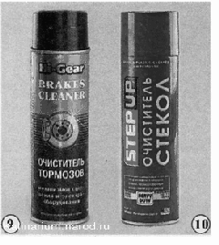
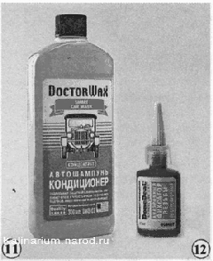
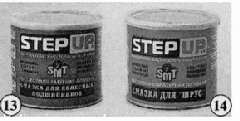
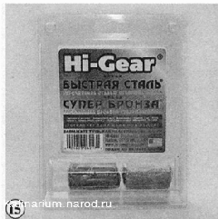
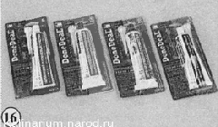
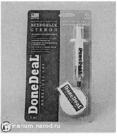

Эксплуатационные и ремонтные материалы1. Состав для промывки системы охлаждения двигателя. 2. Препарат для ухода за панелями салона. 
3. Препарат для ухода за обивкой салона и багажного отделения. 4. Препарат для ухода за ремнями привода ГРМ и генератора.  5. Проникающая смазка, в том числе для смазки резьбовых соединений перед разборкой. 6. Преобразователь ржавчины.  7. Силиконовая смазка. 8. Термостойкий лак для защиты внешних поверхностей двигателя, высоковольтных проводов и резиновых деталей.  9. Препарат для очистки тормозных механизмов. 10. Препарат для очистки стекол.   12. Клей-фиксатор для ответственных резьбовых соединений.  14. Пластичная смазка для ШРУСов и других узлов трения.   17. Набор для ремонта ветровых стекол.  |